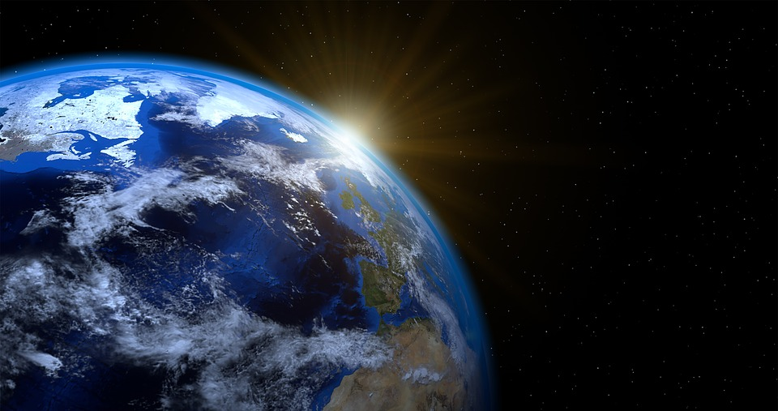

โลก (Earth)

สนามแม่เหล็กโลกและเกราะกำบัง (Magnetosphere): แกนโลกชั้นนอกที่เป็นเหล็กเหลวเกิดการหมุนวนเนื่องจากการพาความร้อนร่วมกับการหมุนรอบตัวเองของโลก เกิดกลไกที่เรียกว่า "ไดนาโม" (Geodynamo) สร้างสนามแม่เหล็กแผ่ออกไปในอวกาศ คอยเบี่ยงเบน ลมสุริยะ (Solar Wind) และรังสีคอสมิกที่เป็นประจุไฟฟ้าพลังงานสูงไม่ให้พุ่งชนและเป่าทำลายชั้นบรรยากาศของโลก อนุภาคบางส่วนที่หลุดรอดเข้ามาจะถูกดักจับไปที่ขั้วโลก เกิดเป็นปรากฏการณ์ แสงเหนือ-แสงใต้ (Aurora)
วัฏจักรคาร์บอน-ซิลิเกต (Carbon-Silicate Cycle): เป็นกลไกควบคุมอุณหภูมิโลกในระยะยาว แก๊ส \(CO_{2}\) ในบรรยากาศจะละลายในน้ำฝนกลายเป็นกรดคาร์บอนิกอ่อน ๆ กัดเซาะหินซิลิเกตบนพื้นดิน ไหลลงสู่มหาสมุทร กลายเป็นเปลือกหอยและหินปูน (\(CaCO_{3}\)) เมื่อแผ่นเปลือกโลกมุดตัว หินปูนเหล่านี้จะถูกพาลงใต้โลก หลอมละลาย และพ่นกลับออกมาเป็นแก๊ส \(CO_{2}\) ผ่านภูเขาไฟ วัฏจักรนี้ใช้เวลาเป็นล้านปีแต่ช่วยให้โลกไม่ร้อนจัดแบบดาวศุกร์หรือหนาวจัดแบบดาวอังคาร
องค์ประกอบทางเคมีของสิ่งมีชีวิต: โลกมีธาตุ CHNOPS (คาร์บอน, ไฮโดรเจน, ไนโตรเจน, ออกซิเจน, ฟอสฟอรัส, กำมะถัน) ในปริมาณที่พอเหมาะและอยู่ในสถานะที่ทำปฏิกิริยากันได้ง่ายในน้ำ ซึ่งเป็นตัวทำละลายสากลที่จำเป็นต่อกระบวนการเมแทบอลิซึมของสิ่งมีชีวิต